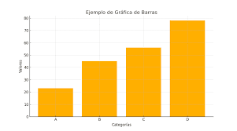

GEOMETRIA Y TRIGONOMETRIA
ARNULFO RIVERA CORTES
En esta unidad de aprendizaje realizamos un análisis sobre el abandono escolar y sus consecuencias. Además, elaboramos estadísticas para conocer mejor este fenómeno y comprender su impacto en la sociedad.
|
 |